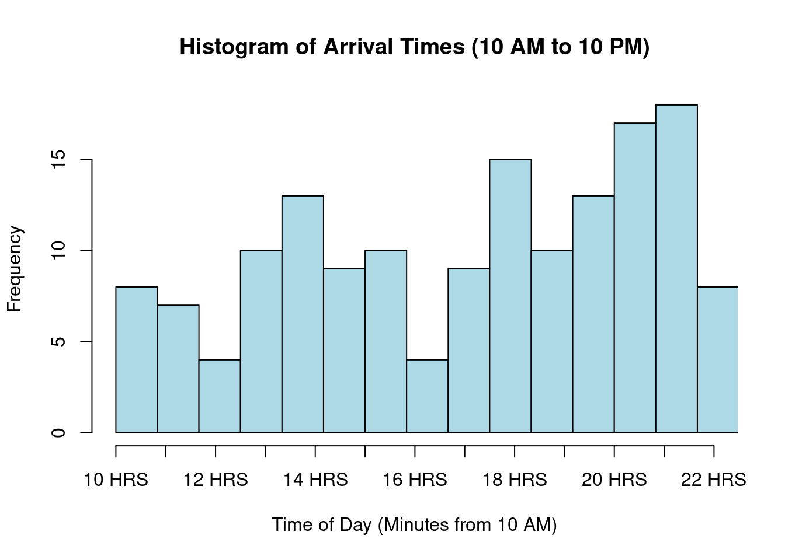
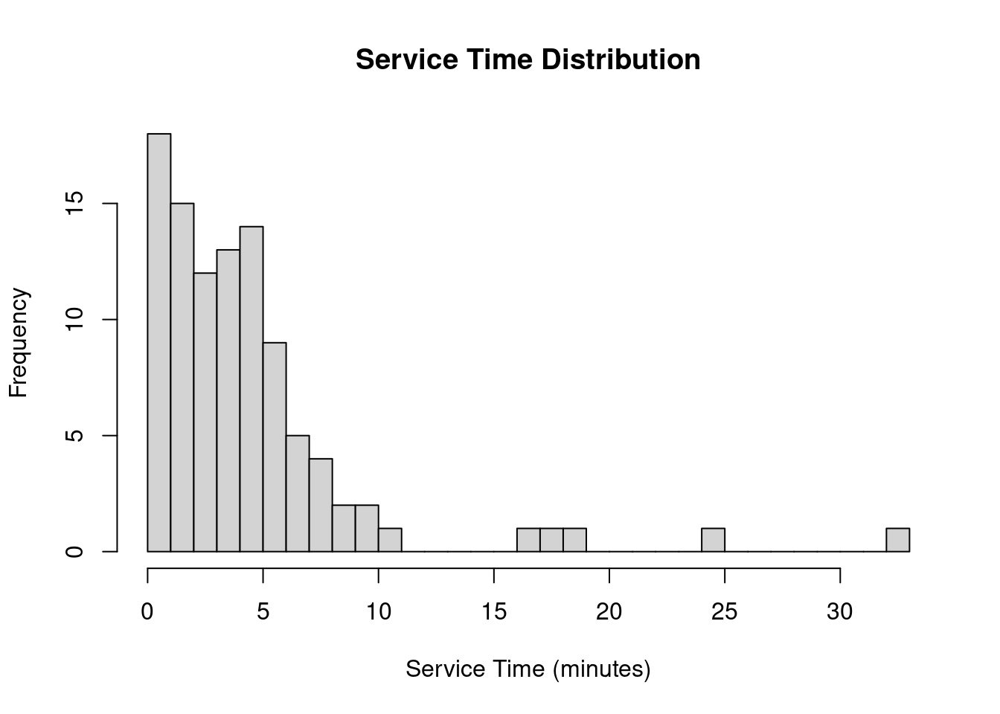
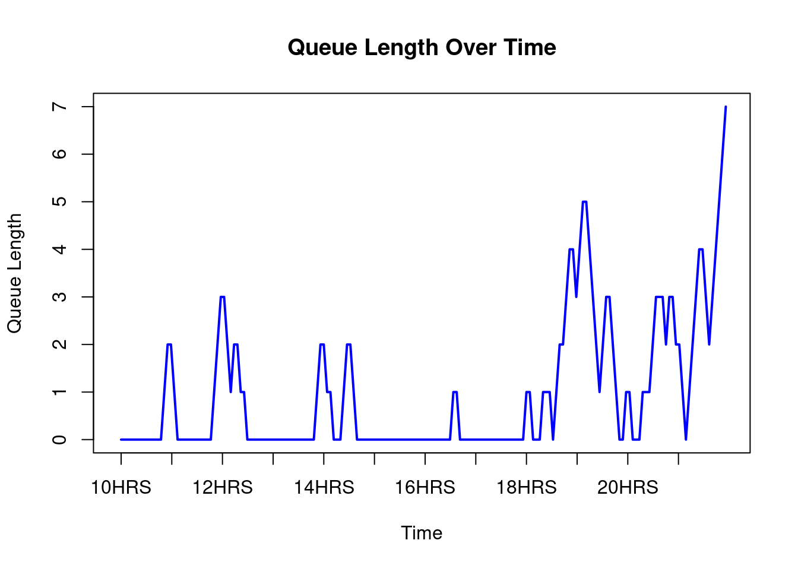

set.seed(111)
time_intervals <- c(0, 120, 300, 420, 720)
arrival_rates <- c(8, 13, 8, 17)
service_rates <- c(4, 4, 4, 4, 4, 4, 4, 6, 6, 6, 6, 6)
n_tables <- 5
#exponential rv
#inverse_cdf_exp <- function(lambda) {
# -log(1 - runif(1)) / lambda
#}
simulate_poisson_arrivals <- function(lambda, start_time, end_time) {
n_arrivals <- rpois(1, (lambda / 60) * (end_time - start_time))
sort(runif(n_arrivals, start_time, end_time))
}
arrival_times <- c()
for (i in 1:4) {
arrivals <- simulate_poisson_arrivals(arrival_rates[i], time_intervals[i], time_intervals[i + 1])
arrival_times <- c(arrival_times, arrivals)
}
arrival_times_in_day <- arrival_times + 600
hist(arrival_times_in_day,
main = "Histogram of Arrival Times (10 AM to 10 PM)",
xlab = "Time of Day (Minutes from 10 AM)",
ylab = "Frequency",
col = "lightblue",
border = "black",
breaks = 20,
xlim = c(600, 1320),
xaxt = "n")
axis(1, at = seq(600, 1320, by = 60), labels = paste(seq(10, 22), "HRS", sep = " "))
service_times <- sapply(arrival_times, function(t) {
hour <- ceiling(t / 60)
rexp(1, rate = service_rates[hour]/60)
})
sample_service_times <- rexp(100, rate = 0.2)
hist(sample_service_times, main = "Service Time Distribution", xlab = "Service Time (minutes)", breaks = 30)
current_time <- 0
downtime <- 0
queue <- c()
queue_lengths <- c()
busy_tables <- rep(0, n_tables)
waiting_times <- c()
for (i in seq_along(arrival_times)) {
next_arrival <- arrival_times[i]
if (all(busy_tables == 0) && current_time < next_arrival) {
downtime <- downtime + (next_arrival - current_time)
print(paste("Downtime:", downtime))
}
current_time <- next_arrival
busy_tables[busy_tables <= current_time] <- 0
if (any(busy_tables == 0)) {
next_table <- which(busy_tables == 0)[1]
service_time <- service_times[i]
busy_tables[next_table] <- current_time + service_time
print(paste("Seating customer at table", next_table, "at time:", current_time, "for service time:", service_time))
waiting_times <- c(waiting_times, 0)
} else {
queue <- c(queue, current_time)
}
queue_lengths <- c(queue_lengths, length(queue))
while (length(queue) > 0 && any(busy_tables == 0)) {
next_table <- which(busy_tables == 0)[1]
wait_time <- current_time - queue[1]
waiting_times <- c(waiting_times, wait_time)
service_time <- service_times[i]
busy_tables[next_table] <- current_time + service_time
queue <- queue[-1]
queue_lengths <- c(queue_lengths, length(queue))
}
}[1] "Downtime: 1.27894140779972"
[1] "Seating customer at table 1 at time: 1.27894140779972 for service time: 4.99000896932557"
[1] "Seating customer at table 2 at time: 5.70574239827693 for service time: 11.5611630297139"
[1] "Seating customer at table 1 at time: 8.05693720467389 for service time: 1.91609330708161"
[1] "Seating customer at table 1 at time: 11.2417823821306 for service time: 5.32095698862204"
[1] "Seating customer at table 1 at time: 18.744301898405 for service time: 53.0929295247327"
[1] "Seating customer at table 2 at time: 20.5732424464077 for service time: 11.7978875425862"
[1] "Seating customer at table 2 at time: 44.4506404269487 for service time: 7.34908571932465"
[1] "Seating customer at table 3 at time: 45.3195859026164 for service time: 7.3618605080992"
[1] "Seating customer at table 4 at time: 50.2004790958017 for service time: 25.8023301778797"
[1] "Seating customer at table 2 at time: 51.8592739664018 for service time: 1.78684489935833"
[1] "Seating customer at table 3 at time: 53.5713316127658 for service time: 46.5967430521674"
[1] "Seating customer at table 2 at time: 61.790859606117 for service time: 28.5764023649011"
[1] "Seating customer at table 5 at time: 63.8754290621728 for service time: 7.84265496768057"
[1] "Seating customer at table 1 at time: 115.984115190804 for service time: 0.838023440546181"
[1] "Seating customer at table 1 at time: 125.898896539584 for service time: 34.402396634911"
[1] "Seating customer at table 2 at time: 130.54736324586 for service time: 21.9680363222815"
[1] "Seating customer at table 3 at time: 140.936786709353 for service time: 7.54442345914747"
[1] "Seating customer at table 1 at time: 170.994629943743 for service time: 32.0763921768742"
[1] "Seating customer at table 2 at time: 171.394876465201 for service time: 2.43470409186557"
[1] "Seating customer at table 2 at time: 177.964810947888 for service time: 23.3128203564427"
[1] "Seating customer at table 3 at time: 179.128496171907 for service time: 27.0416701944981"
[1] "Seating customer at table 4 at time: 179.939042469487 for service time: 2.11209669476375"
[1] "Seating customer at table 5 at time: 181.587242474779 for service time: 24.4442041485075"
[1] "Seating customer at table 4 at time: 184.754166975617 for service time: 17.9602010293507"
[1] "Seating customer at table 1 at time: 203.842637334019 for service time: 14.4208915990995"
[1] "Seating customer at table 3 at time: 211.781974802725 for service time: 2.86719965049997"
[1] "Seating customer at table 1 at time: 218.689206582494 for service time: 11.3737117946452"
[1] "Seating customer at table 3 at time: 223.543596784584 for service time: 7.52846368588507"
[1] "Seating customer at table 4 at time: 225.308049763553 for service time: 34.6234531216046"
[1] "Seating customer at table 5 at time: 227.265714327805 for service time: 7.91566439459352"
[1] "Seating customer at table 1 at time: 233.039203262888 for service time: 4.59619092056528"
[1] "Seating customer at table 2 at time: 234.424371812493 for service time: 0.875416717548305"
[1] "Seating customer at table 2 at time: 235.415614508092 for service time: 1.61187532274381"
[1] "Seating customer at table 3 at time: 235.585327888839 for service time: 3.43397245975211"
[1] "Seating customer at table 2 at time: 237.581301857717 for service time: 35.5592003538927"
[1] "Seating customer at table 1 at time: 248.41386354994 for service time: 2.06347739199293"
[1] "Seating customer at table 1 at time: 250.529669984244 for service time: 29.2899150854412"
[1] "Seating customer at table 3 at time: 261.118671717122 for service time: 5.54471567777009"
[1] "Seating customer at table 4 at time: 261.737025459297 for service time: 1.20579633163288"
[1] "Seating customer at table 5 at time: 262.879615779966 for service time: 2.20451671862975"
[1] "Seating customer at table 4 at time: 264.918164410628 for service time: 2.40702966740006"
[1] "Seating customer at table 2 at time: 274.065948813222 for service time: 0.57334143693932"
[1] "Seating customer at table 1 at time: 287.133448426612 for service time: 32.5353821254989"
[1] "Seating customer at table 2 at time: 294.154946208 for service time: 13.7606545065735"
[1] "Seating customer at table 3 at time: 299.408999048173 for service time: 67.7519227340262"
[1] "Seating customer at table 4 at time: 300.111036077142 for service time: 28.5272745216701"
[1] "Seating customer at table 5 at time: 301.407097801566 for service time: 8.16001716535538"
[1] "Seating customer at table 2 at time: 311.58942785114 for service time: 5.00886627472937"
[1] "Seating customer at table 1 at time: 320.791304754093 for service time: 18.9060795440556"
[1] "Seating customer at table 5 at time: 327.831550128758 for service time: 11.7727272066506"
[1] "Seating customer at table 4 at time: 331.106707770377 for service time: 12.6865127071025"
[1] "Seating customer at table 1 at time: 354.451780160889 for service time: 7.1275767730549"
[1] "Seating customer at table 5 at time: 356.009285654873 for service time: 1.93290903232992"
[1] "Seating customer at table 1 at time: 379.833447318524 for service time: 11.5940851851584"
[1] "Seating customer at table 1 at time: 396.664821021259 for service time: 2.4748663432071"
[1] "Seating customer at table 1 at time: 405.310073532164 for service time: 9.2954975925386"
[1] "Seating customer at table 2 at time: 410.313849784434 for service time: 26.0807719098765"
[1] "Seating customer at table 1 at time: 423.63551331684 for service time: 0.88959150376599"
[1] "Seating customer at table 1 at time: 431.648712912574 for service time: 6.11083668190986"
[1] "Seating customer at table 3 at time: 433.936981838197 for service time: 9.44566878208868"
[1] "Seating customer at table 1 at time: 443.754278873093 for service time: 6.16353428922594"
[1] "Seating customer at table 2 at time: 445.984204094857 for service time: 7.14249451712308"
[1] "Seating customer at table 3 at time: 447.114304807037 for service time: 5.78041905071586"
[1] "Seating customer at table 4 at time: 448.53724595625 for service time: 7.06320415208948"
[1] "Seating customer at table 1 at time: 451.360365380533 for service time: 2.28182554710656"
[1] "Seating customer at table 2 at time: 453.595709572546 for service time: 1.61187607795"
[1] "Seating customer at table 1 at time: 455.955654527061 for service time: 0.0328358133051269"
[1] "Seating customer at table 1 at time: 459.034913945943 for service time: 9.25055621923733"
[1] "Seating customer at table 2 at time: 459.329420076683 for service time: 4.6517775096672"
[1] "Seating customer at table 3 at time: 460.864676283672 for service time: 22.5849385889872"
[1] "Seating customer at table 1 at time: 469.315477930941 for service time: 2.65867650043219"
[1] "Seating customer at table 1 at time: 472.885418152437 for service time: 2.82383863348514"
[1] "Seating customer at table 1 at time: 479.526883112267 for service time: 11.1716833240808"
[1] "Seating customer at table 2 at time: 483.019201252609 for service time: 9.65629785279644"
[1] "Seating customer at table 3 at time: 484.696431602351 for service time: 14.8276489592137"
[1] "Seating customer at table 1 at time: 493.83444509469 for service time: 6.55286858323961"
[1] "Seating customer at table 2 at time: 495.397085817531 for service time: 8.80801386157882"
[1] "Seating customer at table 4 at time: 499.153884295374 for service time: 6.35277015157044"
[1] "Seating customer at table 5 at time: 499.264166532084 for service time: 3.14251281423027"
[1] "Seating customer at table 3 at time: 500.108601646498 for service time: 3.03093639202416"
[1] "Seating customer at table 1 at time: 508.121277512982 for service time: 3.98288077209145"
[1] "Seating customer at table 1 at time: 525.289622442797 for service time: 1.00819880608469"
[1] "Seating customer at table 2 at time: 525.447993194684 for service time: 6.34244672488421"
[1] "Seating customer at table 1 at time: 532.439939752221 for service time: 7.72982077631068"
[1] "Seating customer at table 2 at time: 536.14492891822 for service time: 1.30489839071995"
[1] "Seating customer at table 2 at time: 539.426844315603 for service time: 1.33092812728137"
[1] "Seating customer at table 3 at time: 540.101362885907 for service time: 6.08273030724376"
[1] "Seating customer at table 1 at time: 544.298044340685 for service time: 7.14246105360699"
[1] "Seating customer at table 1 at time: 554.512018435635 for service time: 1.38875148724765"
[1] "Seating customer at table 1 at time: 556.631492315792 for service time: 8.76914294394565"
[1] "Seating customer at table 2 at time: 558.253388064913 for service time: 10.7366318903388"
[1] "Seating customer at table 3 at time: 563.575991154648 for service time: 10.5517501566083"
[1] "Seating customer at table 1 at time: 573.329695388675 for service time: 2.16839378233999"
[1] "Seating customer at table 2 at time: 574.385886294767 for service time: 1.33105030748993"
[1] "Seating customer at table 1 at time: 584.673814550042 for service time: 27.1577257464144"
[1] "Seating customer at table 2 at time: 588.977360730059 for service time: 9.95265422346902"
[1] "Seating customer at table 3 at time: 590.849325251766 for service time: 7.67972381485285"
[1] "Seating customer at table 4 at time: 592.799118049443 for service time: 0.785282379947603"
[1] "Seating customer at table 4 at time: 593.701772396453 for service time: 0.668709171004593"
[1] "Seating customer at table 5 at time: 593.995604971424 for service time: 6.33270762395114"
[1] "Seating customer at table 2 at time: 604.758997731842 for service time: 8.9941723454268"
[1] "Seating customer at table 4 at time: 605.135852149688 for service time: 24.6175244624231"
[1] "Seating customer at table 5 at time: 608.946346845478 for service time: 26.4617202232096"
[1] "Seating customer at table 1 at time: 612.018696153536 for service time: 8.75247634343408"
[1] "Seating customer at table 2 at time: 615.276328129694 for service time: 9.79992653819334"
[1] "Seating customer at table 1 at time: 624.058593744412 for service time: 4.17881041299552"
[1] "Seating customer at table 2 at time: 625.435805115849 for service time: 5.10650013573468"
[1] "Seating customer at table 1 at time: 640.431802701205 for service time: 5.15621345490217"
[1] "Seating customer at table 1 at time: 651.284320936538 for service time: 8.81122489417803"
[1] "Seating customer at table 5 at time: 654.433019114658 for service time: 15.7164195061651"
[1] "Seating customer at table 1 at time: 665.649100025184 for service time: 17.9505378372016"
[1] "Seating customer at table 3 at time: 665.911567797884 for service time: 6.38695605564862"
[1] "Seating customer at table 4 at time: 667.344660270028 for service time: 11.2020430989088"
[1] "Seating customer at table 5 at time: 670.806034519337 for service time: 18.7390661231222"
[1] "Seating customer at table 3 at time: 674.108187952079 for service time: 14.534786659384"
[1] "Seating customer at table 4 at time: 681.191911180504 for service time: 12.7137394897164"
[1] "Seating customer at table 1 at time: 684.364640135318 for service time: 38.5387048663056"
[1] "Seating customer at table 3 at time: 691.171301370487 for service time: 0.820740358904004"
[1] "Seating customer at table 3 at time: 695.991593138315 for service time: 12.2348552193017"
[1] "Seating customer at table 3 at time: 709.18393899221 for service time: 26.6934985841129"plot(queue_lengths, type = "l", xlab = "Time", ylab = "Queue Length",
main = "Queue Length Over Time", col = "blue", lwd = 2,
xaxt = "n", xlim = c(0, length(queue_lengths)))
axis(1, at = seq(1, length(queue_lengths), by = length(queue_lengths) / 12),
labels = paste(10 + (seq(1, length(queue_lengths), by = length(queue_lengths) / 12) - 1) / (length(queue_lengths) / 12), "HRS", sep=""))
avg_wait_time <- if (length(waiting_times) > 0) mean(waiting_times) else 0
cat("Average Waiting Time Across All Customers:", avg_wait_time, "minutes\n")Average Waiting Time Across All Customers: 3.022725 minutescat("Total Downtime:", downtime, "minutes\n")Total Downtime: 1.278941 minutes